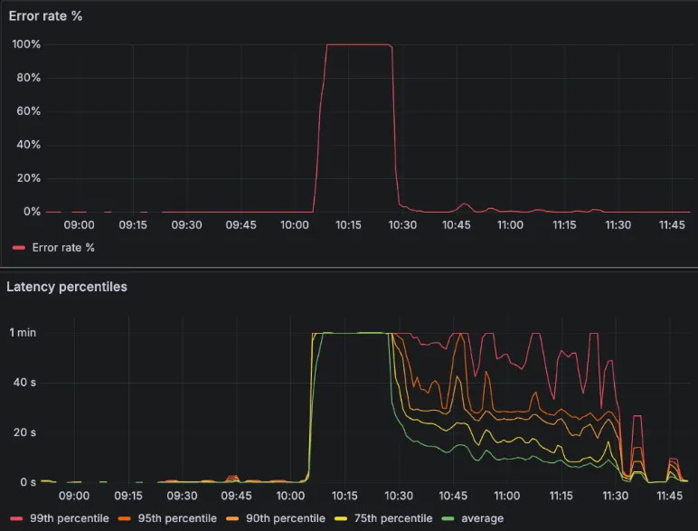
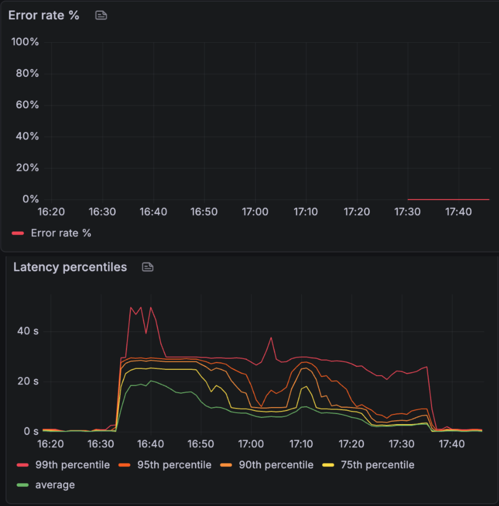

Building Semantic Search
for 9 Billion Notes
How we moved Evernote from keyword matching to meaning-based search — from choosing models to deploying on our own GPU infrastructure, all while keeping user data private.
A new kind of search
Evernote users add content every day: notes, documents, images, PDFs, and more. Over time, accounts fill up and finding something from months or years ago becomes a real challenge. The default search had a key limitation: it relied on exact keyword matching. If you couldn't remember the precise words you used in a note, you simply wouldn't find it.
Semantic search solves this. Instead of matching letters, it matches meaning. This opens the door to natural wording and integration with powerful AI features like search overviews, Q&A on your notes, and automated note editing and organization. These tools can't rely on guessing exact keywords — they need a search layer that's flexible but accurate.
It came with real challenges. Evernote holds 9 billion notes, making the cost of processing and embedding content significant — both in compute and storage. Notes span a huge range of formats: plain text, bullet lists, reminders, calendar events, audio, and more. Privacy added another hard constraint: many users store sensitive information, so sending data to third-party APIs was not an option. Everything had to stay on our own infrastructure.
In this post, we walk through how we built the semantic search pipeline end to end — from choosing the right models to deploying and testing at scale.
The pipeline

The architecture is built around two models: one for embedding and one for reranking.
- Embedding a note. When a note is saved, it gets split into smaller chunks. Each chunk is run through the embedding model, which converts it into a vector — a list of numbers that captures the meaning of that piece of text. All vectors are stored and indexed.
- Searching for a query. When a user types a search query, it gets converted into a vector. We look for the stored vectors closest to the query vector in terms of cosine similarity — determining which notes (and which snippets) are most relevant.
- Reranking results. After initial retrieval, a second model scores the results again and reorders them. This surfaces the most relevant content at the top and discards false positives.
Markdown conversion
The first step is converting notes to a readable format. Evernote notes are stored in ENML, an XML-based format rich with structure. Great for rendering, not ideal for LLMs — it's more verbose and less interpretable by models. XML headers contain formatting information that dilutes the semantics of the actual content.
Compared to Markdown, XML results in more embeddings to search and store. Chunking XML is also problematic because nodes might start and end across different chunks, creating malformed content. Markdown is also convenient when combining semantic search with an LLM to generate text from retrieval results.
<en-note>
<div style="--en-codeblock:true; ...">
<div>import torch</div>
<div>print('hi')</div>
</div>
<ul>
<li><div>Key point 1</div></li>
<li><div>Key point 2</div></li>
</ul>
</en-note>import torch
print('hi')
- Key point 1
- Key point 2A structured note with a code block and bullet points in both formats. Markdown is much more compact and doesn't retain verbose formatting information.
Embedding model selection
We explored open-source embedding models, looking for one that was:
- Accurate for our use case: The model should handle note-looking text — not just generic passages — with sensible similarity scores.
- Low cost and latency: With billions of notes to process, differences in model size or inference efficiency directly impact costs and total machine time.
We used the MTEB leaderboard to select candidates, then built a custom evaluation framework for final selection. We created a synthetic Evernote account with 481 realistic notes and 38 hard queries. Queries were designed to have little or no word overlap with the corresponding note, and sometimes not even match the language.
- 1. Search Service — Production Readiness Requirements 48.08
- 2. Prometheus 46.02
- 3. GROWTH 42.47
- 4. Microservices — search-metrics-service 40.97
- 5. Service Monitoring 40.87
Example test case. The model ranked the expected note as second — achieving partial success.
| Model | Acc @1 | Acc @5 | Chunk size | Overlap |
|---|---|---|---|---|
| Qwen2 1.5B Instruct | 61% (23/38) | 89% (34/38) | 2000 | 200 |
| Qwen3 0.6B | 47% (18/38) | 71% (27/38) | 2000 | 200 |
| Qwen3 8B | 61% (23/38) | 87% (33/38) | 2000 | 400 |
Accuracy scores on the internal dataset. Accuracy@1 = expected note returned first. Accuracy@5 = expected note in top 5.
We chose Qwen2 1.5B Instruct — top performer on our accuracy test. It also runs with Text Embedding Inference, achieving higher inference speed compared to standard Transformers.
Chunk size
Large notes aren't fed to the model all at once. Notes with over 100K characters would lose too much information compressed into a single vector. Instead, notes are split into "chunks" that are individually embedded. We went with fixed-length character chunks with overlap — the simplest strategy. Fancier strategies showed unclear gains given the variety of note topics and formats.
Retrieval performance from Qwen2 1.5B Instruct varying chunk size. A chunk size around 2500 tokens looks solid.
We chose a chunk size of 3000 characters — slightly bigger than the optimal test value — to speed up search and reduce storage costs.
Reranker
With the embedding model and chunking strategy in place, we tested the pipeline on internal Evernote accounts. Two things stood out:
- Good recall: The relevant notes appeared among the first results.
- Bad precision: Many notes that were empty or not very relevant ranked considerably high.
We added a reranking model to post-process results. Unlike cosine similarity (which operates on compressed latent representations), the reranker looks at query and note tokens directly to assign better scores. This ensures only relevant notes appear in the UI and provides cleaner context for RAG applications.
- 0.82 Lunch spots near HQList of restaurants within walking distance, ratings and…
- 0.78 Rome trip food diaryDay 2: found an amazing trattoria near Piazza Navona…
- 0.75 Team dinner planningShortlist of restaurants for the team offsite dinner…
- 0.73 Meeting notes — Oct 14Discussed office layout changes and lunch catering options…
- 0.71 Weekly groceriesMilk, eggs, bread, chicken, rice, olive oil, tomatoes…
- 0.70 Untitled note(empty)
- 0.93 Lunch spots near HQList of restaurants within walking distance, ratings and…
- 0.81 Team dinner planningShortlist of restaurants for the team offsite dinner…
- 0.58 Rome trip food diaryDay 2: found an amazing trattoria near Piazza Navona…
- 0.21 Meeting notes — Oct 14Discussed office layout changes and lunch catering…
- 0.09 Weekly groceriesMilk, eggs, bread, chicken, rice, olive oil, tomatoes…
- 0.03 Untitled note(empty)
The reranker rescores and reorders results, pushing irrelevant or empty notes below the threshold. Only notes above the cutoff are returned to the user.
We selected Qwen3-Reranker-0.6B — lightweight and efficient with vLLM as inference server.
Deployment
Infrastructure and tech stack
Pantheon GPU Infra
Proprietary GPU inference stack with message-driven architecture via RabbitMQ for natural load buffering.
TEI & vLLM
Inference servers delivering 2–24x throughput over naive PyTorch via dynamic batching and PagedAttention.
ElasticSearch
Vector database with HNSW-based approximate k-nearest neighbor search and pre-filtered kNN queries.
Pantheon architecture
At Bending Spoons we operate our own GPU inference stack, internally known as Pantheon, optimized for running models in production with low latency and high availability. Unlike a typical REST-based serving layer, Pantheon is message-driven: backends publish inference requests to RabbitMQ rather than calling HTTP endpoints, providing natural load buffering. For semantic search, two applications run: one for embedding and one for reranking.
Autoscaling
Pantheon includes a smart autoscaler called Euclid that frames scaling as a constrained optimization problem: given current traffic, find the cheapest allocation of VMs across regions that still meets latency and throughput requirements. Unlike traditional metric-threshold autoscalers, it takes a target maximum latency as input and fetches GPU availability status regularly to serve requests at minimum cost.
- $x_i$: machines in Machine Instance Group $i$
- $C_i$: cost per machine
- $RPS_i$: throughput per machine
Inference servers
Loading a model with Transformers is the simplest approach — but it wastes the vast majority of your GPU. Inference servers add systems-level optimizations achieving 2–24x throughput over naive PyTorch:
- Text-Embedding-Inference (TEI) — Hugging Face's purpose-built server for embedding and reranking models. Key optimization: token-based dynamic batching, keeping GPU utilization at ~95%.
- vLLM — Open-source LLM inference engine with PagedAttention, borrowing virtual memory paging from OS design to manage the KV cache. With continuous batching, GPU slots are freed immediately as sequences complete.
In our codebase, inference servers run as sidecar containers alongside FastAPI applications, exposing OpenAI-compatible APIs.
ElasticSearch
Elasticsearch stores and retrieves the embeddings. When a user submits a query, the query embedding is sent to Elasticsearch, which runs an approximate k-nearest neighbor (kNN) search using the HNSW algorithm.
We maintain two dedicated indices: notes for note text content and ocr for OCR-extracted text from attachments (images, PDFs). This isolation allows independent scaling and reindexing.
Elasticsearch supports pre-filtered kNN — filters applied during HNSW graph traversal, not after. Filter conditions are compiled into a BitSet — a compact bitmap of matching documents. During traversal, candidate nodes that fail the filter are still explored (to preserve graph connectivity) but aren't counted toward the k results. This guarantees exactly k results that satisfy both semantic similarity and the deterministic constraints, unlike a post-filter which could reduce the result set below k. Every query is pre-filtered at minimum by user identity (also used as a shard routing key), with optional scoping by notebook, tag, or shared notes.
Load balancer and autoscaler tuning
Before deploying to production, the pipeline needed to be tested at scale. A naive deployment strategy doesn't work at high request rates: requests get queued and cancelled on timeout.


We ran a series of indexing experiments processing 1.5M notes per run, tweaking two key parameters:
- Parallel requests per GPU worker. Too few means unsaturated GPU memory and suboptimal throughput. Too many overwhelms workers, increasing latency and causing request loss.
- Autoscaler reactivity. Our autoscaler takes a maximum request latency parameter that controls how aggressively it scales.
We found that sending 180 note chunks in parallel is a good working point, and that the autoscaler tuning should be aggressive (max latency of 100s). This achieved a flat error rate and low latency across millions of requests per hour.
Embedding all notes
Turning 3 billion notes into vectors was the longest and most stressful part of the project. During processing — which lasted days — anything could go wrong. We kept careful watch on dashboards, pausing processing at any suspicious metric change.
We hit issues with the ENML-to-Markdown conversion crashing on highly structured notes that were heavy to parse. A queue of dead notes was re-injected daily to retry failures. After days of attempts, processing completed and live indexing began — updating embeddings every time a note was edited.
AI Integrations
Quick Answer

Our first integration was with the search experience. If the user types a question in the search bar, an LLM replies based on the chunks found relevant by semantic search. Users can find what they need faster, without opening any note. The experience is purely conversational — no query syntax to learn:
- "What was the WiFi password from the hotel in Rome?"
- "Find my notes about the technology choice for the backend in the notebook Swe-Team"
- "Summarize my notes tagged meeting from April 2024"
Not every query needs a generated answer — sometimes users just want notes. A lightweight intent detection step, powered by phi-4 via vLLM, runs in parallel with document retrieval to decide whether to return note results or generate an AI answer. This adds no extra latency to the search path.
To support filters by time or entity, a separate constraint extraction call (also phi-4) parses natural-language constraints — like "in notebook Swe-Team" or "from April 2024" — into Evernote's structured query language. These deterministic filters are then passed to ElasticSearch's pre-filtered kNN (described in the Infrastructure section), combining semantic similarity with exact constraints in a single query.
When a generated answer is needed, we feed both the question and the retrieved chunks into phi-4, producing a concise, contextual response grounded in the user's own notes.
AI Assistant

Semantic search becomes extremely powerful when plugged into agents as a tool. Evernote's AI Assistant uses semantic search as its primary mechanism for helping users find and interact with their notes. When the user sends a message, the agent determines if a search is needed, formulates the query, and presents results appropriately — or uses them to produce analyses, reports, or trigger actions like moving notes across notebooks.
Conclusion
Integrating semantic search created real product value by powering the retrieval experience. Thanks to vector matching, users can find notes with much less effort. Integrations with LLMs allow extracting note details surgically or analyzing notes in bulk. The feature was generally well appreciated by our users, who found the retrieval intuitive and quite accurate.
The main factors that contributed to the project's success:
- The awareness that a concrete product limitation could be solved with a widely adopted technology
- Extensive use of open-source models to save costs from external providers and retain control over sensitive data
- Efficient hosting with inference servers (TEI, vLLM) compared to standard implementations
Speed. Semantic search is slower than keyword search, which runs on-device and is effectively instant. To avoid degrading the experience, we show keyword results immediately and load semantic results separately. Users may not always understand why two sets of results appear or why the semantic ones take longer.
Cost. Despite all the effort to run embeddings efficiently and limit storage overhead, this feature is expensive. We had hundreds of A100 GPUs running during the initial indexing phase, and some are still needed to keep the feature alive.
Thanks to both the successful and problematic aspects, this was one of the most interesting projects we've ever worked on. Involving product shaping, model research, and engineering at scale, it's been a great team effort on a hard but extremely rewarding challenge.
Interested in working on challenges like this? We're hiring.